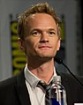

How I Met Your Mother
How I Met Your Mother (often abbreviated as HIMYM) is an American sitcom created by Craig Thomas and Carter Bays for CBS. The series, which aired from September 2005 to March 2014, follows main character Ted Mosby and his group of friends in New York City's Manhattan. As a frame story, Ted (in 2030) recounts to his daughter Penny and son Luke the events from September 2005 to May 2013 that led to him meeting their mother.
The series was loosely inspired by Thomas and Bays' friendship when they both lived in New York.[1] The vast majority of the episodes (196 out of 208) were directed by Pamela Fryman. The other directors were Rob Greenberg (7 episodes), Michael Shea (4 episodes), and Neil Patrick Harris (1 episode).
Known for its non-contemporary structure, humor, and incorporation of dramatic elements, How I Met Your Mother was popular throughout its run. It received positive reviews initially, but reception became more mixed as the seasons went on.[2][3][4] The show was nominated for 91 awards and received 21.
Fun Fact
This is my favorite show! :)
Premise
The series follows the adventures of Ted Mosby (played by Josh Radnor) and his love life as a single man. His stories are narrated by Bob Saget as Ted Mosby 25 years later as he tells them to his adolescent children, Luke and Penny.
The story goes into a flashback and starts in 2005 with 27-year-old Ted Mosby living in New York City and working as an architect. The narrative deals primarily with his best friends. These include the long-lasting couple Marshall Eriksen (Jason Segel), a law student and Lily Aldrin (Alyson Hannigan), a kindergarten teacher, who have been dating for almost nine years when Marshall proposes, as well as womanizing playboy Barney Stinson (Neil Patrick Harris), and Canadian news reporter Robin Scherbatsky (Cobie Smulders). All of the characters' lives are entwined. The series explores many storylines, including a "will they or won't they" relationship between Robin and each of the two single male friends, Marshall and Lily's relationship, and the ups and downs of the characters' careers.
The show's frame story depicts Ted (voice of Bob Saget, uncredited) verbally retelling the story to his son Luke (David Henrie) and daughter Penny (Lyndsy Fonseca) as they sit on the couch in the year 2030. This future-set frame is officially the show's "present day", and How I Met Your Mother exploits this framing device in numerous ways: to depict and re-depict events from multiple points of view; to set up jokes using quick and sometimes multiple flashbacks nested within the oral retelling; to substitute visual, verbal, or aural euphemisms for activities Ted does not want to talk about with his children (sexual practices, use of illicit substances, vulgar language, etc.).
While the traditional love story structure begins when the romantic leads first encounter each other, How I Met Your Mother does not introduce Ted's wife (Cristin Milioti) until the eighth-season finale and only announces her full name, Tracy McConnell, during the series finale. Her first name, Tracy, is mentioned in the first season, at the end of episode nine.
Production
How I Met Your Mother was inspired by Carter Bays and Craig Thomas' idea to "write about our friends and the stupid stuff we did in New York", where they previously worked as writers for Late Show with David Letterman, among others.[1] The two drew from their friendship in creating the characters. Ted is based loosely on Bays, and Marshall and Lily are based loosely on Thomas and his wife.[5][6] Thomas' wife Rebecca was initially reluctant to have a character based on her but agreed if they could get Alyson Hannigan to play her. Hannigan was looking to do more comedy work and was available.[5] Josh Radnor and Jason Segel, who were cast as Ted and Marshall, respectively, were not well known, although Segel had been a cast member on the short-lived Freaks and Geeks and a recurring guest star on Judd Apatow's follow-up show, Undeclared. The role of Barney was initially envisioned as a "John Belushi-type character"[7] before Neil Patrick Harris won the role after being invited to an audition by the show's casting director Megan Branman.[8] Pamela Fryman invited Bob Saget to be the voiceover narrator, Future Ted, explaining to him that the show would be like The Wonder Years but "kind of into the future".[9] Saget either went to the television studio and recorded the narration while watching the episode, or did so separately and rerecorded with the episode if necessary.[10] He normally did not attend table readings but did so for the last episode.[11]
In multiple interviews Bays and Thomas have stated that "a pretty famous actress"[12] turned down the role of Robin, who they revealed in February 2014 was Jennifer Love Hewitt.[13] They then cast the unknown Cobie Smulders; Bays and Thomas later said, "Thank God we did for a million reasons... when Ted's seeing her for the first time, America's seeing her for the first time—the intrigue of that propelled the show going forward and kept the show alive".[12] Although Ted is initially smitten by Robin in the pilot, it is quickly established at the end of the episode that she is not the mother, which Thomas said was done so they would not repeat the "will they or won't they" Ross and Rachel storyline from Friends.[6]
According to an Entertainment Weekly article, the writers adopted facets of each main actor's personality and incorporated them into their characters. This includes Neil Patrick Harris' skills with magic, Jason Segel's passion for songwriting, Alyson Hannigan's absent-mindedness while pregnant, and Josh Radnor's intellectualism.[14]
MacLaren's, an Irish bar in the middle of New York City, in which a lot of the show is set, is loosely based on four favorite bars of Bays, Thomas, and others' from the Late Show staff. Others include: McGee's, a Midtown tavern near the Ed Sullivan Theater where the Late Show is taped; McHale's, a legendary Hell's Kitchen bar which closed in 2006; Chumley's, a since-closed historic Greenwich Village pub; and Fez, another closed bar on the Upper West Side.[15] McGee's had a mural that Bays and Thomas both liked and wanted to incorporate into the show.[16] The name for the bar is from Carter Bays' assistant, Carl MacLaren; the bartender in the show is also named Carl.[17]
Episodes were generally shot over a three-day period in the Los Angeles-based Soundstage Studio 22[18] and featured upwards of 50 scenes with quick transitions and flashbacks. However, the "Pilot" episode was filmed at CBS Radford.[19] The laugh track was later created by recording an audience being shown the final edited episode. Thomas claimed that shooting before a live audience would have been impossible because of the structure of the show and the numerous flashforwards in each episode and because doing so "would blur the line between 'audience' and 'hostage situation'".[20] Later seasons started filming in front of an audience on occasion, when smaller sets were used.
The theme song is a portion of "Hey Beautiful" by The Solids, of which Bays and Thomas are members. Episodes from season 1 generally started with the opening credits. A cold opening has been used since season 2. Viewers then occasionally see Ted's children on a couch and hear him talking to them, telling the story of how he met their mother. Alternatively, scenes from previous episodes or shots of New York City with Ted narrating over the top are shown. Thomas has stated that Future Ted is an unreliable narrator, since he is trying to tell a story that happened over 20 years earlier;[21] this has been a plot point in several episodes including "The Goat", "Oh Honey", "How I Met Everyone Else", and "The Mermaid Theory". Nevertheless, Thomas has also emphasized maintaining a coherent and consistent universe and trying to avoid continuity errors, a problem he noticed in other shows.[22]
| Characters | Pictures |
|---|---|
| Josh Radnor/Ted Mosby |

|
| Jason Segel/Marshall Eriksen |

|
| Cobie Smulders/Robin Scherbatsky |

|
Neil Patrick Harris/Barney Stinson This is going to be legen- wait for it.... |
 |
| Alyson Hannigan/Lily Aldrin |

|
News Letter
Sign up for news about the show!